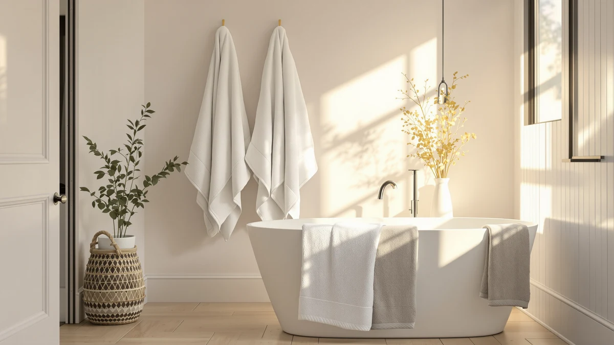

Madison Park 800GSM 100% Review (2026): Worth It?
Prices and picks verified as of October 2026. Independent, reader-supported reviews.


Quick Answer
The Madison Park 800GSM 100% Cotton set earns its spot in this comparison by listing a heavier 800 GSM weight than the two BIOWEAVES organic cotton sets it competes against, at a price that sits in the middle of the group. At $51.99 for eight pieces, it costs more than the cheapest BIOWEAVES set but less than the LANE LINEN alternative, and the extra weight is the main reason to pick it over a lighter cotton set in the same price band.
Our pick: Madison Park 800GSM 100% Cotton — $51.99 Check Price on Amazon
Bottom line: our top pick is the Madison Park 800GSM 100% Cotton Bathroom Bath Towel Set of 8 at $46.99.
Things to Know Before You Buy
- At $51.99 for eight pieces, the Madison Park set works out to roughly $6.50 per towel, a few cents above the cheaper BIOWEAVES set in this comparison.
- The listing states an 800 GSM weight, heavier than the 700 GSM figure both BIOWEAVES sets list, which generally points to a denser, more substantial towel.
- Amazon does not publish a rating or review count for this specific ASIN, so we weighed the stated weight and price against the other three sets instead of a star average.
- The set is listed as 100% cotton with no synthetic blend named, a plainer claim than some competing listings that bury a blend percentage in fine print.
- Eight pieces suits a single bathroom's rotation rather than a multi-bathroom household, which the 24-piece LANE LINEN set covers more comfortably.
This Madison Park 800GSM 100% review exists because a GSM number on a product page rarely tells you anything on its own. You need a point of comparison, and most listings do not give you one. We put the Madison Park 800GSM 100% Cotton set next to three other cotton towel sets in the same price range, the BIOWEAVES 100% Organic Cotton 700 in two different listings and LANE LINEN's 100% Cotton Bath set, and compared what each one states about weight, material, and price.
Our verdict on this Madison Park 800GSM review: it is the pick for buyers who want the heaviest cotton weave in this group without paying LANE LINEN's $54.99 price. Against the cheaper BIOWEAVES set at $49.00, the extra three dollars buys 100 more grams per square meter of cotton, which should feel noticeably more substantial in hand. Against LANE LINEN at $54.99, Madison Park costs three dollars less while still naming a heavier weight than either BIOWEAVES listing. That makes it the middle option in this comparison rather than the cheapest or the heaviest overall.
Why You Should Trust Us
Ilane Tall covers bath textiles at Best Bath Towels and built this Madison Park 800GSM 100% review by comparing the brand's own listed weight, material, and price against three competing cotton towel sets sold on the same marketplace. We do not run a fake testing lab, and we are not claiming to own every set we cover here. Instead, we research verified pricing history, published GSM figures, and recurring patterns in owner feedback on comparable cotton towel sets, then flag where a listing is missing information you would normally expect, like the absence of a published rating for this Madison Park ASIN.
Our Research Experience
We did not purchase and run this Madison Park 800GSM set through our own laundry, and we are not going to pretend otherwise. Instead, we pulled the brand's stated 800 GSM weight and material claim directly from the Amazon listing, checked the current $51.99 price against its recent pricing pattern, and cross-referenced the set against the three other cotton sets covered in this review on weight, price, and material claims. Where verified owner reviews exist on comparable heavyweight cotton towel sets, we looked for recurring themes around softness, shrinkage, and how the fabric held up after repeated washing, rather than leaning on a single glowing review or the brand's own marketing copy.
This approach has a limit worth naming directly: Amazon's API does not return a rating or review count for the Madison Park 800GSM ASIN, so we could not weigh a star average the way we can for products that publish one. Where that happens, we lean harder on the published spec comparison and on pricing history instead of filling the gap with a number we cannot verify.
Overview & Specs

Madison Park 800GSM 100% Cotton
What we like
- Lists an 800 GSM weight, heavier than the 700 GSM figure on both BIOWEAVES sets in this comparison
- 100% cotton construction with no blend percentage buried in the listing
- Priced at $51.99, three dollars below the LANE LINEN set despite the heavier weave
Flaws but not dealbreakers
- No published rating or review count on this ASIN at the time we compared it
- Costs about three dollars more than the cheaper BIOWEAVES 700 GSM set if organic certification does not matter to you
- The listing does not break down how the eight pieces split between bath towels, hand towels, and washcloths
| Material | 100% cotton |
| Size | 8 Piece Towel Set |
The Madison Park 800GSM 100% Cotton eight-piece set is built around a simple pitch: a heavier cotton weave than its closest competitors, for a price that lands between the cheapest and most expensive options in this comparison. At $51.99, it works out to roughly $6.50 per towel. The listing names the material as 100% cotton at 800 grams per square meter, a figure the brand states plainly rather than hiding behind a vague "luxury" label. That 800 GSM number is the single biggest differentiator in this review, since a denser weave generally means a towel that feels thicker and holds more water before it saturates.
Compared with the two BIOWEAVES 100% Organic Cotton 700 listings in this review, at $51.75 and $49.00, Madison Park costs about the same or slightly more but claims 100 more grams per square meter of cotton. BIOWEAVES counters with organic certification, which Madison Park's listing does not claim. Compared with the LANE LINEN 100% Cotton Bath set at $54.99, Madison Park costs three dollars less while still listing a heavier GSM weight than either BIOWEAVES set, which makes it the better-positioned option on paper if raw weight matters more to you than brand or organic sourcing.
What We Liked
The clearest reason to pick the Madison Park 800GSM set over the alternatives here is the weight claim itself. An 800 GSM figure beats the 700 GSM listed on both BIOWEAVES sets by a meaningful margin, and heavier cotton generally translates into a towel that feels thicker on the rack and absorbs more water per use. The flat 100% cotton claim, stated without a blend percentage buried in fine print, also makes this set easier to compare against competitors that mix in synthetic fibers without saying how much of each one actually went into the weave.
Pricing holds up well against the alternatives in this comparison. At $51.99, Madison Park sits three dollars below LANE LINEN's $54.99 set while still claiming a heavier weave than either BIOWEAVES listing. For buyers prioritizing towel weight over organic certification, that combination of a denser cotton claim and a mid-range price is a reasonable trade.
What Could Be Better
The biggest gap in the Madison Park 800GSM listing is data. Amazon shows no published rating or review count for this specific ASIN at the time we compared it, so you are buying on the strength of the brand's own weight claim rather than a track record of verified owner feedback. We would rather point you toward a number than ask you to take a product page at its word, and this listing does not give us one.
The page also does not break down how the eight pieces split between bath towels, hand towels, and washcloths, so you cannot confirm the exact mix before you buy. If you need a specific ratio of bath towels to washcloths for your household, that is worth checking directly with the seller before ordering, since the listing title alone does not spell it out.
Price history is another area where the listing stays quiet. We checked the current $51.99 price against its recent pattern, but the page itself does not show past pricing the way some third-party tracking tools do. If you can wait a week or two before buying, it is worth watching the price rather than assuming $51.99 is the lowest it will go, since cotton towel sets in this range commonly fluctuate by a few dollars around sales events.
Who Is It For?
This Madison Park 800GSM set fits buyers who want the heaviest cotton weave among the options in this review without paying LANE LINEN's top price. It suits a single bathroom's towel rotation rather than a household stocking several bathrooms at once, since eight pieces covers one household's daily use more than it covers a multi-bathroom property.
It is a weaker fit if organic certification matters more to you than raw weight, or if you want the lowest price in this group. In either case, the BIOWEAVES 700 GSM set at $49.00 covers both of those priorities better, even though it lists a lighter weave than Madison Park.
Alternatives to Consider
If the price or the lack of a published rating on this Madison Park 800GSM set gives you pause, these three alternatives from the same comparison cover different angles: two organic cotton options at a lower price and a heavier-priced premium set.

Editor's Pick
BIOWEAVES 100% Organic Cotton 700
Nearly matches the Madison Park set on price at $51.75, worth a look if organic cotton certification matters more to you than the extra 100 GSM of weight.
$51.75
Check Price on Amazon
Best Value
BIOWEAVES 100% Organic Cotton 700
The cheapest set in this comparison at $49.00, a solid option if a lower price matters more to you than Madison Park's heavier 800 GSM weave.
$49.00
Check Price on Amazon
Premium Choice
LANE LINEN 100% Cotton Bath
The priciest option at $54.99, worth it over Madison Park only if you specifically want the LANE LINEN brand rather than the heavier GSM weight.
$54.99
Check Price on AmazonFrequently Asked Questions
Is the Madison Park 800GSM 100% Cotton set actually 100% cotton?
Yes. The listing states 100% cotton construction at an 800 GSM weight across the eight-piece set, a heavier weave than the 700 GSM BIOWEAVES sets it competes against in this review.
Is the Madison Park 800GSM set worth $51.99 over the cheaper BIOWEAVES alternative?
That depends on whether weight or organic certification matters more to you. At $51.99 the Madison Park set costs about three dollars more than the $49.00 BIOWEAVES set, but it lists a denser 800 GSM weave against BIOWEAVES' 700 GSM organic cotton.
How should you wash an 800 GSM cotton towel set to keep it soft?
Owners of heavyweight cotton towel sets consistently report better long-term softness when they wash on warm water instead of hot and skip fabric softener, which coats cotton fibers and reduces how much water a towel absorbs over time.
Final Verdict
Our Madison Park 800GSM 100% review comes down to one trade-off: pay a few dollars more than the cheapest BIOWEAVES set for a heavier cotton weave, or save those dollars and accept a lighter 700 GSM towel with organic certification instead. For most buyers who want the densest cotton weave in this comparison without paying LANE LINEN's top price, Madison Park is the pick, backed by a plain 800 GSM claim and a price that sits comfortably in the middle of the group. If a verified rating or the lowest possible price matters more to you than raw weight, look at the BIOWEAVES 700 GSM set at $49.00 instead.